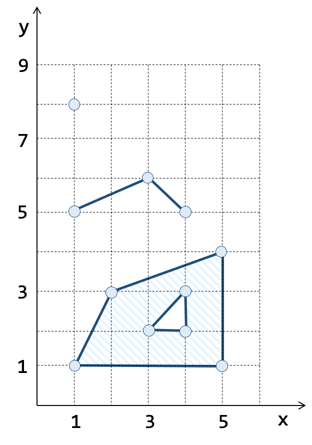
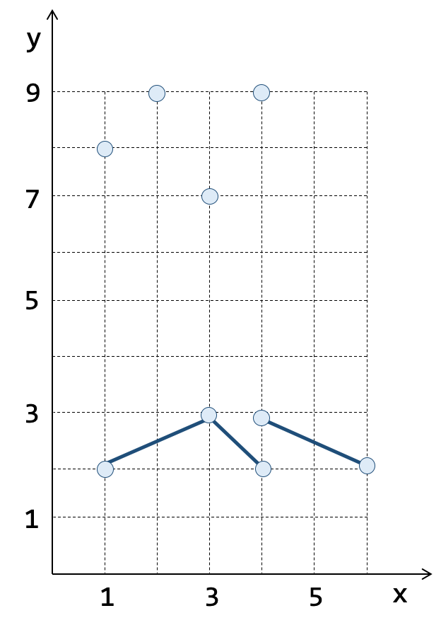
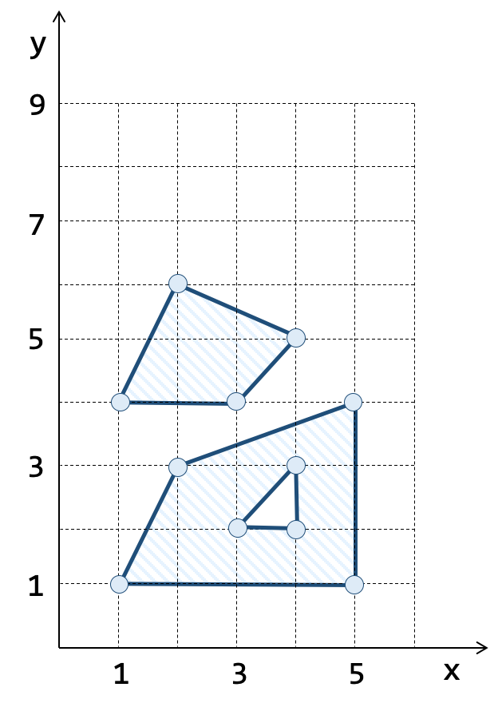

3.4.2. Well-Known Text (WKT)
A função ST_GeomFromText permite criar uma geometria a partir de uma string na notação Well-Know Text ou WKT. Os exemplos de consulta SQL abaixo mostram como utilizar esta função para criação das geometrias apresentadas na Tabela 3.29.
( a ) Geometrias Simples |
( b ) Coleções Pontos e Linhas |
( c ) Coleções Polígonos |
|---|---|---|
 |
 |
 |
1. Criando um ponto de coordenadas \(x = 1\) e \(y = 8\) (Tabela 3.29a):
SELECT ST_GeomFromText('POINT(1 8)');
2. Criando uma linha definida a partir de três vértices (Tabela 3.29a):
SELECT ST_GeomFromText('LINESTRING(1 5, 3 6, 4 5)');
3. Criando um polígono simples com um anel externo e um anel interno (Tabela 3.29a):
SELECT ST_GeomFromText('POLYGON( (1 1, 2 3, 5 4, 5 1, 1 1),
(3 2, 4 3, 4 2, 3 2) )');
4. Criando uma coleção de pontos (Tabela 3.29b):
SELECT ST_GeomFromText('MULTIPOINT(1 8, 3 7, 4 9, 2 9)');
5. Criando uma coleção de linhas (Tabela 3.29b):
SELECT ST_GeomFromText('MULTILINESTRING( (1 2, 3 3, 4 2),
(4 3, 6 2) )');
6. Criando uma coleção de polígonos (Tabela 3.29c):
SELECT ST_GeomFromText('MULTIPOLYGON( ( (1 4, 2 6, 4 5, 3 4, 1 4) ),
( (1 1, 2 3, 5 4, 5 1, 1 1),
(3 2, 4 3, 4 2, 3 2) ) )');